Commit 429cec221fae3d415581dbff2148a6f0c4ce1a43; oba javna servisa imaju odgovarajućih šest fajlova. Izdvojena QA aplikacija ponovo otvorena, sačuvan keš/podaci i geometrija.
Activity COLD13476ms nije app-ready vreme ili pouzdano poređenje sa prethodnim prolazom. Prvi emulator pauziran tokom pregleda, pa vraćenrunning. Viđeni prelazni/nepotpuni kadrovi. Uzrok ranijegANR-a ostaje otvoren.
Hotseat ponudio unos za novu partiju, ne nastavak. Otkazano bez unosa imena/početka igre; skinovi u aktivnoj partiji nisu ovim potvrđeni. Nema reklame/nagrade, nove igre ili DB pristupa. ZavršniGreen meni i saldo12168isti. Nema novih runtime izmena.
Drugi QA emulator pre ponovnog otvaranja: Green meni, saldo12168.
Prvi sačuvani kadar posle Android Activity otvaranja; Activity mera nije vreme do spremnog menija.
Naknadni meni ima nepotpuno iscrtan donji deo pozadine. Ne označava se kao potpuno stabilan prvi kadar.
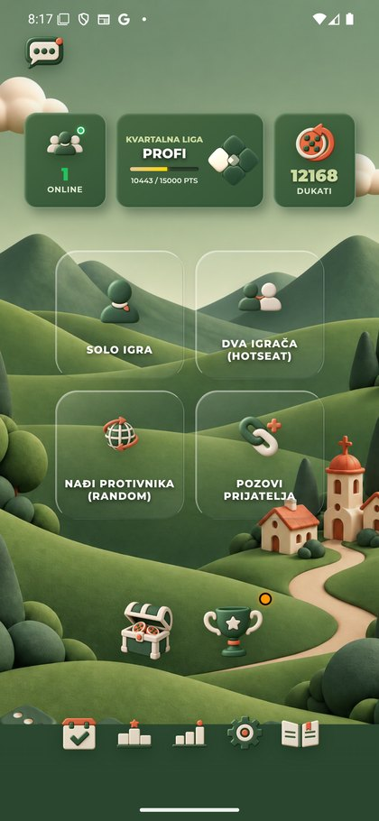
Green Top lista: globalni tab, zaglavlje, kontrole i medalje.
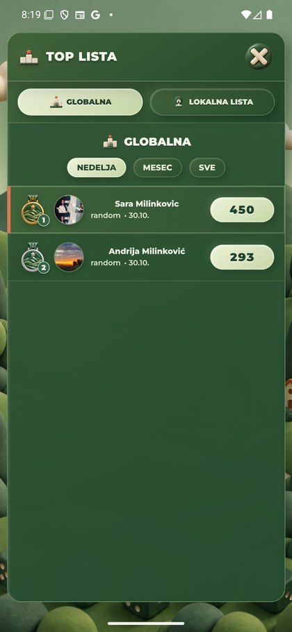
Green Top lista: lokalni tab i njegova ikona.
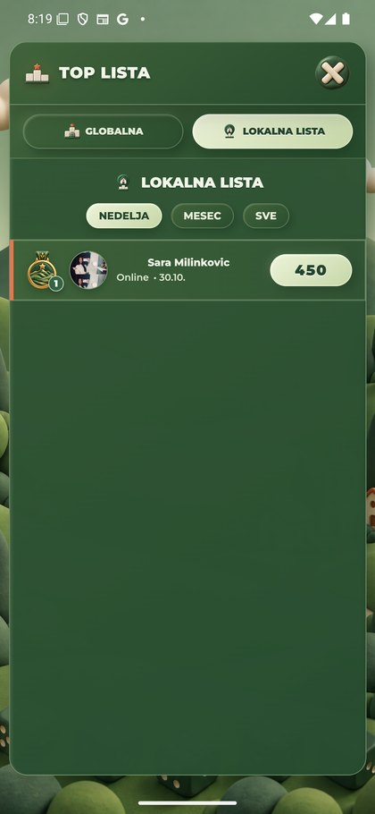
Green Online igrači: ikona sobe, pretraga i sopstveni red. Nema drugog reda/aktivnog oka u ovoj listi.
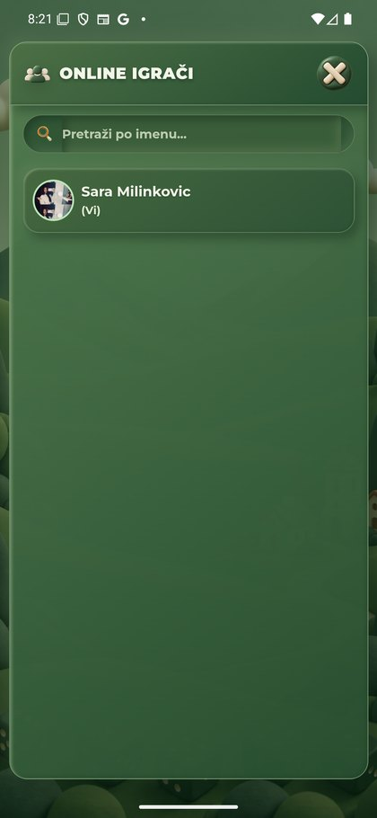
Green Pozovi prijatelja: dinamičke kartice, friend/search/send i Indeks moći; bez slanja poziva.
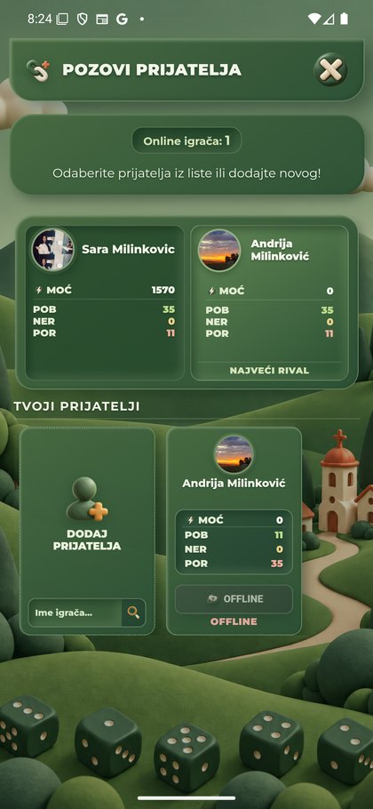
Prvi Neon izbor: još je vidljiv ekran pripreme.
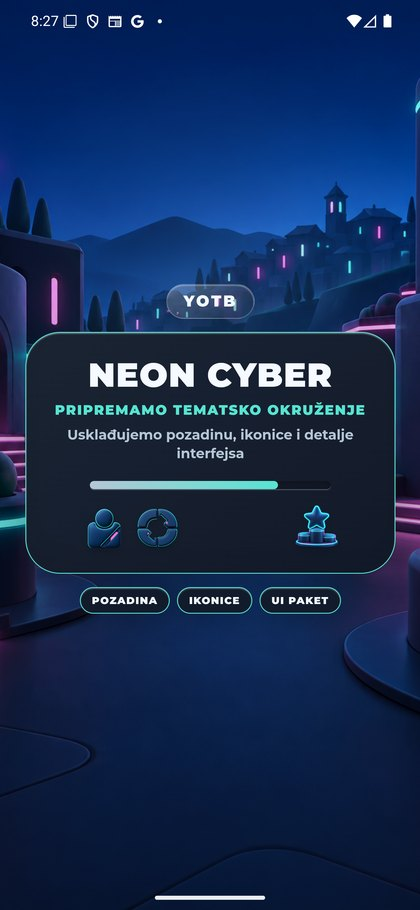
Bez ponovljenog izbora: kompletna Neon Podešavanja.
Prvi Vaskršnji izbor: priprema, konačan uspeh još nije potvrđen.
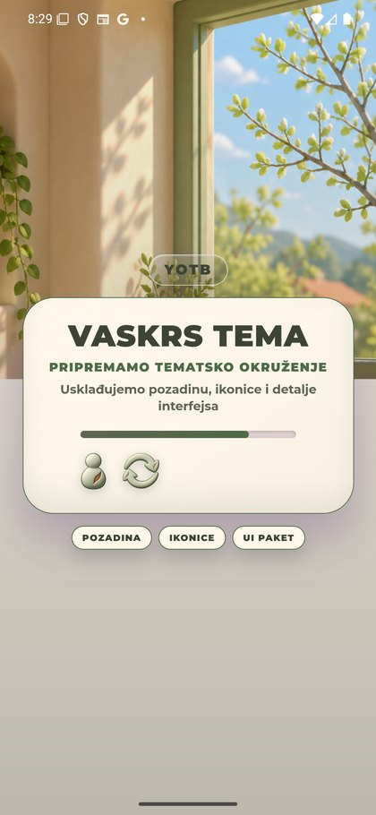
Ishod prvog Vaskršnjeg izbora: ostao Neon. Nalaz prvog učitavanja ostaje otvoren.
Ponovljeni izbor: kompletna Vaskršnja Podešavanja.
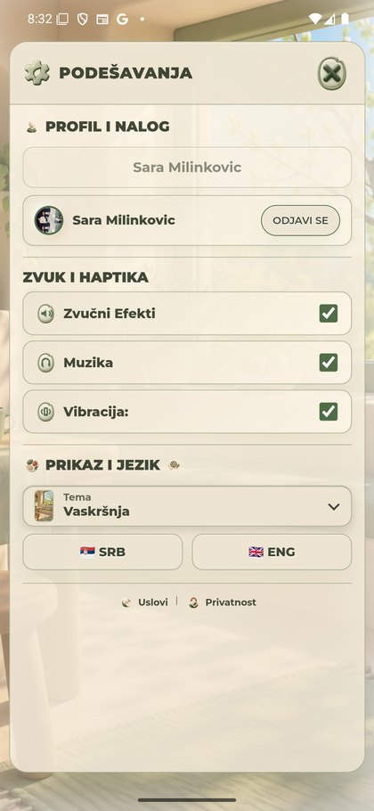
Prvi Mesečev izbor: ekran pripreme.
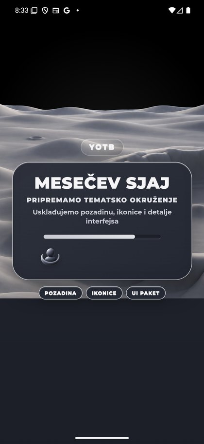
Bez ponovljenog izbora: kompletna Podešavanja Mesečevog Sjaja.
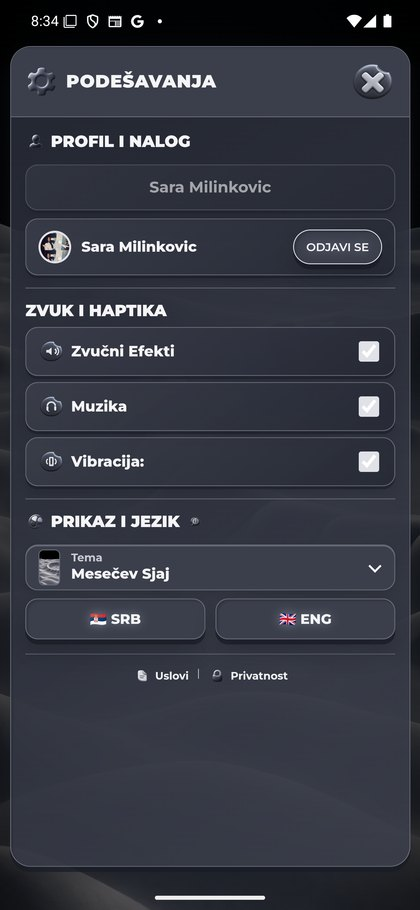
Jedan povratni izbor posle Easter/Moon: ponovo kompletan Neon.
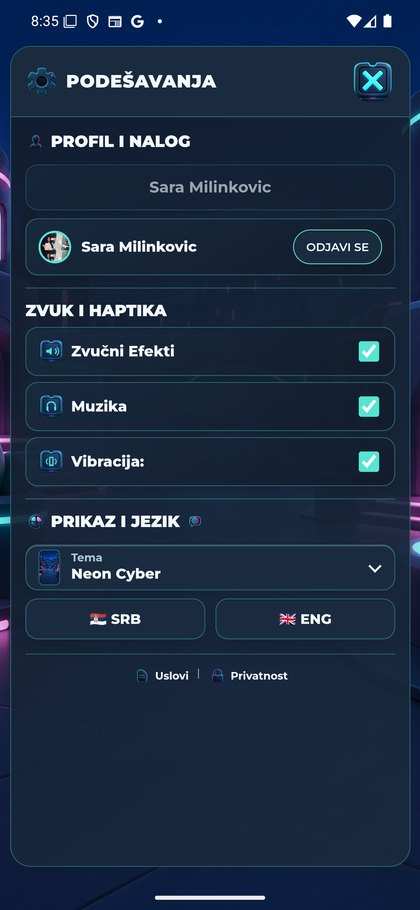
Neon Top lista: globalni tab sa njegovim kanonskim PNG.
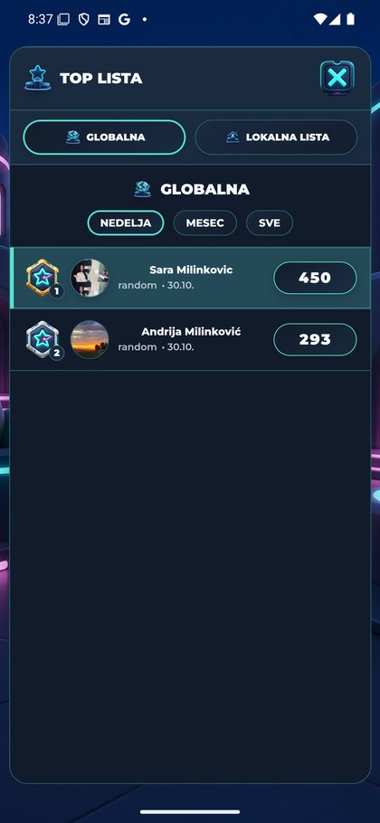
Neon Top lista: lokalni tab; nema zelenih kontrolnih ikona.
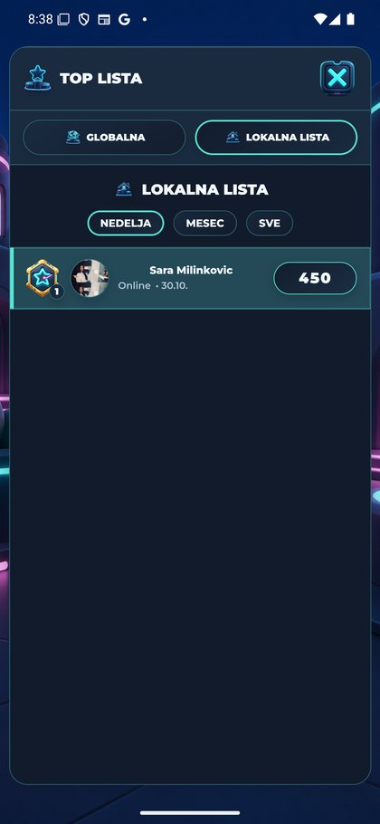
Neon Online igrači: zaglavlje i search PNG; samo sopstveni red.
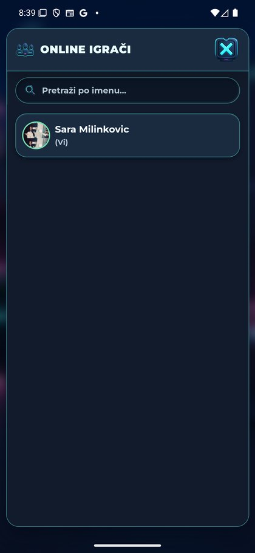
Neon Pozovi prijatelja: sopstveni friend/search/send/PowerIndex PNG u dinamičkim karticama.
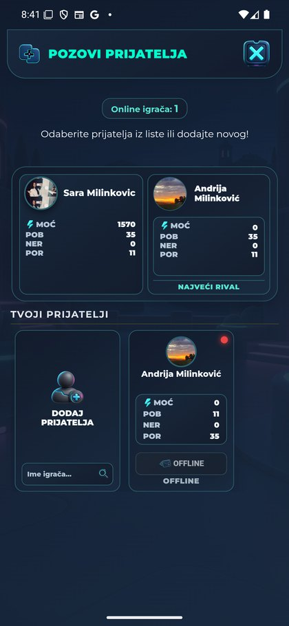
Hotseat nije ponudio nastavak; otvorio je unos za novu partiju. Ime nije uneseno niti potvrđeno.
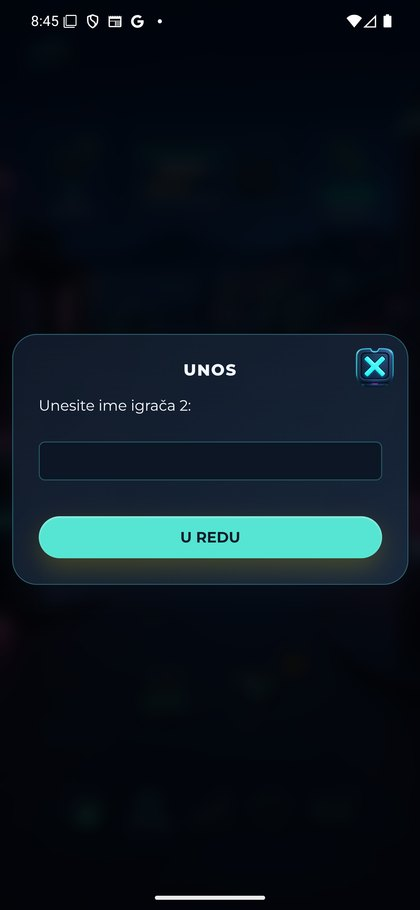
Unos je otkazan preko X, vraćen Neon meni. Nema nove partije ili skin testa u igri.
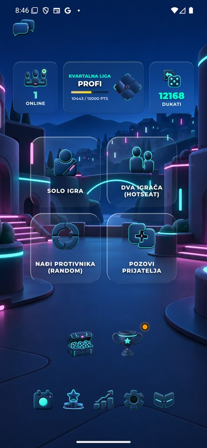
Jednim povratnim izborom ponovo kompletna Green Podešavanja.
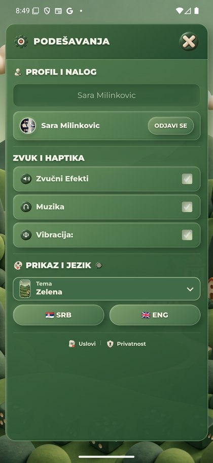
Završni kompletan Green meni; prikazani saldo i dalje12168.
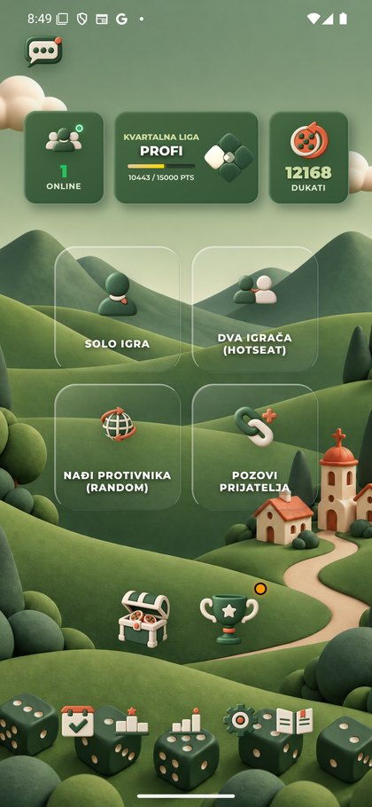